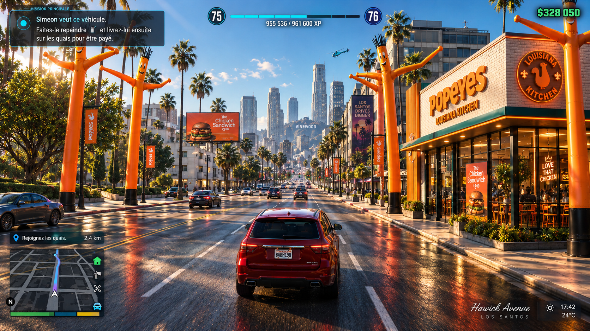

Popeyes - Activation — Non remporté
Nouveau restaurant
Prompt : Une activation digitale pour le lancement des restaurants Popeyes en France.

...l
Nous avons réfléchi à une activation digitale sur un des serveurs français de GTA Online. Dans la version GTA Online, le joueur doit se nourrir et boire afin que son personnage reste en vie. Mais tout cela est payant.
...l
Le principe est d’ouvrir un restaurant dans le jeu où tout est gratuit, pour faire profiter les joueurs pendant une semaine. À la fin de l’opération, lors du Z Event ou de la ZLAN, nous révélons que Popeyes arrive IRL en France : un livreur entre alors pour apporter leur commande aux gamers de l’événement.
Projet suivant